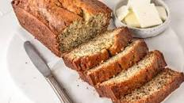

Banana Bread

Description:
This banana bread is a great recipe for a nice snack, or a great breakfast. It is very moist and delicous.
Ingredients:
- 2 to 3 medium (7" to 7-7/8" long) very ripe bananas, peeled (about 1 1/4 to 1 1/2 cups mashed)
- 1/3 cup (76g) butter, unsalted or salted, melted
- 1/2 teaspoon baking soda (not baking powder)
- 1 pinch salt
- 3/4 cup (150g) sugar (1/2 cup if you would like it less sweet, 1 cup if more sweet)
- 1 large egg, beaten
- 1 teaspoon vanilla extract
- 1 1/2 cups (205g) all-purpose flour
- Preheat the oven to 350°F (175°C), and butter an 8 x 4-inch loaf pan
- Mash the bananas and add the butter
- Mix in the baking soda and salt. Stir in the sugar, beaten egg, and vanilla extract. Mix in the flour
- Pour the batter into your prepared loaf pan
- Bake for 55 to 65 minutes at 350°F (175°C), or until a toothpick or wooden skewer inserted into the center comes out clean
- Cool and then enjoy!